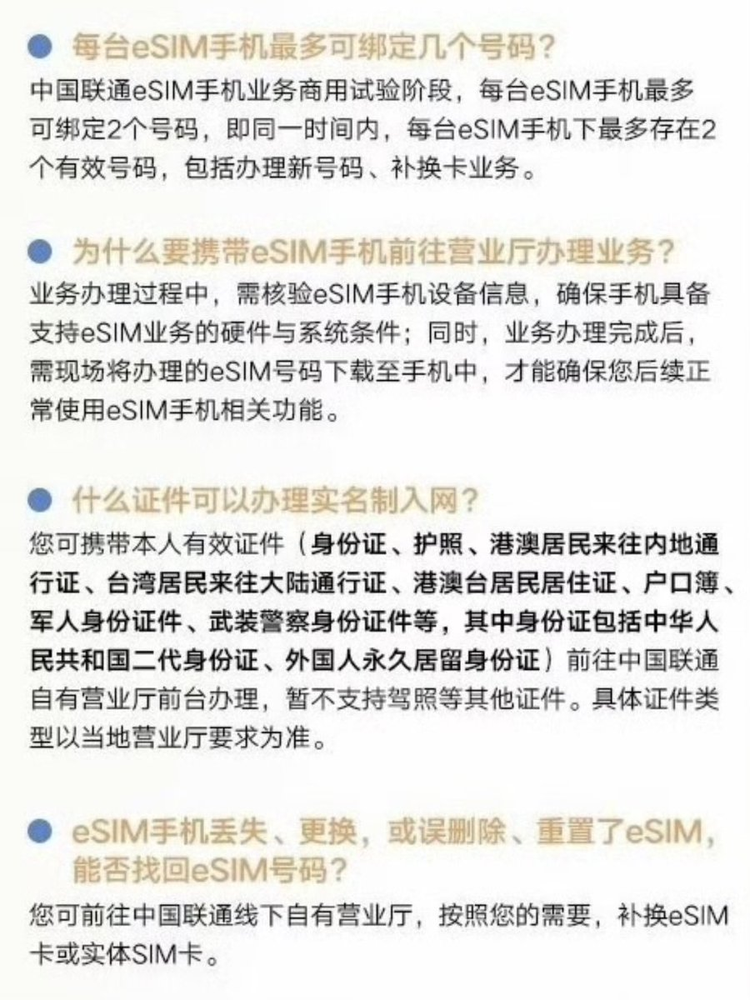

奶昔🥤
@realNyarime
@unixzii 因为运营商要给上面的点面子。这个东西属于是说把双卡双待给做在了无卡手机上，我觉得最脑残的还是中国联通，因为中国联通它本来就有iPad业务可以走推送。而且现在三家还要记录你的eid+imei2，我想试问一下，谁能篡改一个eid？那eSTK都得认他做第一。

Cyandev
@unixzii
中国特色 eSIM 你卡机型我忍了，需要机卡绑定我忍了，需要线下办理我忍了，只能同时存在 2 张 eSIM 我也忍了…
可你他妈的在到处都是二维码的中国为什么每次下载 eSIM 数据还只能去营业厅？
是想在 2025 复活一下小灵通吗？
工信部和运营商的领导们能做个人吗？ https://t.co/0NuzlKIZOZ